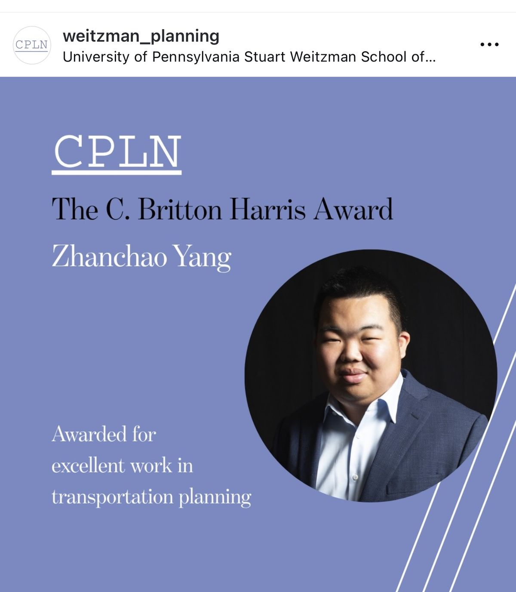

01 · University of Pennsylvania · 2026
C. Britton Harris Award
Department of City & Regional Planning · Weitzman School of Design
Awarded for excellent work in transportation planning at the University of Pennsylvania.
View details
Related research
- Telework intensity and daily trip-making, a manuscript under review at Transportation Research Part A.
- Transit service cuts and road congestion in Philadelphia, a working paper.
Supporting materials
Departmental award announcement, Weitzman School of Design, 2026. Certificate and ceremony photographs will be added as they become available.
